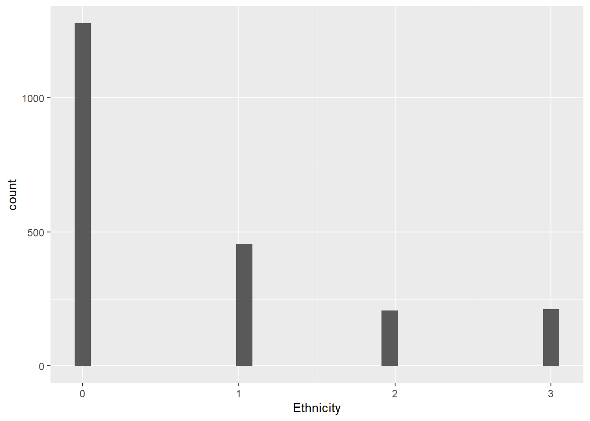
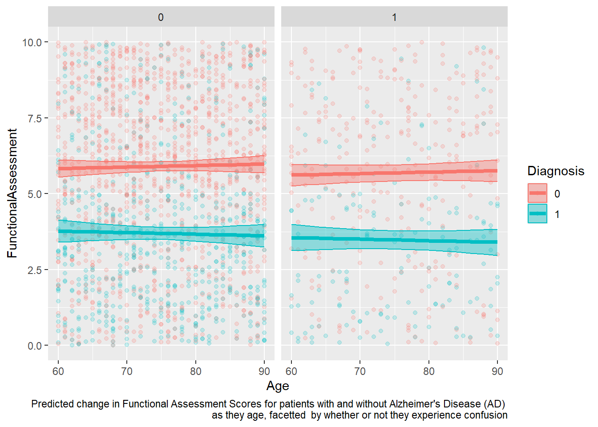

Alzheimer’s Disease (AD) is one of the most feared and hated conditions of the modern age. With global life expectancy increasing, we are finding that advancements to our physical health are not sufficient enough to outrun Father Time. We must also preserve our minds. And one of the greatest threats to the aging mind is Alzheimer’s Disease. Despite decades of research, its exact cause (and a definitive cure) remain elusive.
We know that (in most cases) AD begins when proteins in the brain tissue misfold and start to develop conglomerates called plaques and tangles. But what causes that initial misfolding? It’s unclear, but we have ways of finding factors that increase or decrease one’s risk of developing AD.
Using a dataset from Kaggle.com, posted by Rabie El Kharoua, called 🧠 Alzheimer’s Disease Dataset 🧠“, we will take a look at some of these factors, and of course create some visualizations to go with them. This is the link to the dataset site: https://www.kaggle.com/datasets/rabieelkharoua/alzheimers-disease-dataset
Here I will read in the data and packages:
library(dplyr)
Attaching package: 'dplyr'
The following objects are masked from 'package:stats':
filter, lag
The following objects are masked from 'package:base':
intersect, setdiff, setequal, union
── Column specification ────────────────────────────────────────────────────────
Delimiter: ","
chr (1): DoctorInCharge
dbl (34): PatientID, Age, Gender, Ethnicity, EducationLevel, BMI, Smoking, A...
ℹ Use `spec()` to retrieve the full column specification for this data.
ℹ Specify the column types or set `show_col_types = FALSE` to quiet this message.
This dataset has a merciful 2.149 observations, but a mind-numbing 35 variables. Some of them, we can pretty much disregard because they are irrelevant (e.g., PatientID) or because they are functionally similar to other variables (e.g., Confusion/Disorientation).
The other variables are all somewhat interesting to me. In “short”, we have:
Demographic Variables: Age, Gender, Ethnicity, and EducationLevel
“Vital” Statistics: BMI, Smoking, PhysicalActivity, AlcoholConsumption, DietQuality, and SleepQuality
Medical History: FamilyHistoryAlzheimers, CardiovascularDisease, Diabetes, Depression, HeadInjury, Hypertension, SystolicBP, DiastolicBP, and CholesterolTotal
… and Mental Examination Scores: FunctionalAssessment (measure of cognitive ability), Memory Complaints, BehavioralProblems, ADL (Activity Daily Living, essentially the ability to do everyday tasks independently) Disorientation, PersonalityChanges…
… and finally, Diagnosis, which is whether or not the patient was diagnosed with AD.And which will be our main response variable.
To start, let’s get some basic information about the participants of this study: Gender (proportion), Age (mean), and histograms of the frequency of Ethnicity.
`stat_bin()` using `bins = 30`. Pick better value `binwidth`.

Unsurprisingly, the ethnic breakdown of this study pretty well reflects the demographics of the U.S., where it takes place. It is majority white, followed by African American, then Asian, and finally “Other.”
Let’s get into some identification of factors that increase the odds of developing Alzheimers.
I think I would like to start with just a linear regression to determine how FunctionalAssessmentScore is impacted by Age,Diagnosis, and Confusion. In this way, I will be able to demonstrate how having AD is a detriment to a person’s ability to function independently, regardless of their age. Just for fun, I will add an interaction term to see if we can demonstrate a progressive deterioration with AD. I will need a 3rd variable to act as a covariate, which will be the role of Confusion.
Obviously, this model is not very effective. Alzheimer’s is a very complicated disease, and our ability to score a person’s ability to function is very subjective. But we like to have fun here, so I’m going to go ahead with visualization.
function_preds <-ggpredict(mod_function, terms =c("Age", "Diagnosis", "Confusion")) %>%as.data.frame(terms_to_colnames =TRUE) %>%as_tibble()data <- alzheimers %>%mutate(Diagnosis =factor(Diagnosis) )ggplot(data = function_preds, aes(x = Age, y = predicted, color = Diagnosis)) +geom_point(data = data, aes(x = Age, y = FunctionalAssessment, color = Diagnosis), alpha =0.2) +geom_ribbon(data = function_preds, aes(y = predicted,ymin = conf.low,ymax = conf.high,fill = Diagnosis), alpha =0.4) +geom_line(linewidth =1.5) +facet_wrap(~Confusion) +labs(caption ="Predicted change in Functional Assessment Scores for patients with and without Alzheimer's Disease (AD) \n as they age, facetted by whether or not they experience confusion")
Warning: Combining variables of class <factor> and <numeric> was deprecated in ggplot2
3.4.0.
ℹ Please ensure your variables are compatible before plotting (location:
`combine_vars()`)
Warning: Combining variables of class <numeric> and <factor> was deprecated in ggplot2
3.4.0.
ℹ Please ensure your variables are compatible before plotting (location:
`combine_vars()`)

As is to be expected, with just three predictor variables, we can not very well predict what a patient will receive for their Functional Assessment score. Additionally, it does not appear to show that, in patients with Alzheimer’s (the blue group), significantly decrease in their test scores as they age, illustrating the interaction term’s p-value of 0.45. HOWEVER. It does do a good job of showing that patients with AD score significantly lower on their Functional Assessments. The confidence bands do not overlap and you can even somewhat see the split in the data itself.
Well. Onto the binary logistic regression to see if that is significant!
For this model, I am going to predict Diagnosis using ADL, FunctionalAssessment,FamilyHistoryAlzheimers, and Education Level as my predictors.
mod_log <-glm(data = alzheimers, Diagnosis~ADL+FunctionalAssessment+FamilyHistoryAlzheimers+EducationLevel, family ="binomial")tidy(mod_log)
Interestingly enough, all the predictors are at least somewhat significant (p<0.15), which is a nice sign. The overall model, of course, is still not great, with an AIC of 2244 and a BIC of 2273. But let’s go ahead and plot it, just to see what it looks like.
This visualization at least has a nice steep slope. Naturally, it appears that, as a patient’s ADL score(ability to live on their own) increases, their odds of having AD decreases, because AD is strongly associated with a loss of that ability. However, it does seem that EducationLevel actually doesn’t seem to matter that much after all. The difference between 0 (no HS diploma) and 3 (higher than bachelor’s) is practically nonexistent, which was a little unexpected, even with the higher p-value. Even Diagnosis odds with and without a family history of AD seem to overlap in their confidence intervals.
Connection to Class
I have been trying to use these blog posts as a way to review what we have spent time learning most recently in class, so for this one, of course, I did regression analyses. I tried to incorporate some interpretations as well (which may have been easier if Alzheimer’s had more defined “causes” but oh well). I also did some more basic review with summarizing data/models and interpreting the values therein.